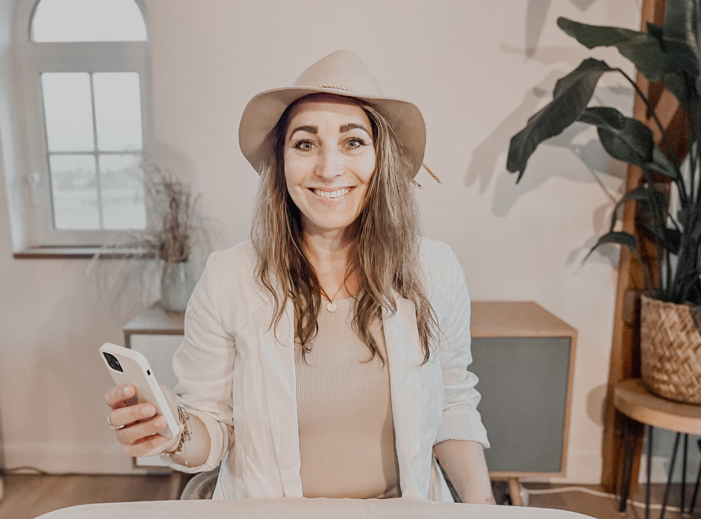

Hey, ich bin Lisa!
Hier erfährst du mehr über mich, meine Arbeit und meine große Vision
Moin, ich bin
Lisa
!
...Germanistin M.A., PR- und Marketing Beraterin – und meine Reise führt mich seit
mittlerweile über 18 Jahren einmal quer durch Journalismus, Marketing, Public Relations und die
Medienlandschaft.
Klingt nach einer aufregenden und spannenden Zeit? Oh ja, das ist es! :) Ich durfte schon bei Hit-Radio Antenne Niedersachsen vor dem Mikrofon sitzen, in der Geschichts- und Deutschredaktion des Westermann Schulbuchverlags Bücher konzipieren, habe für RTL Nord Interviews an der Alster geführt, Geschichten bei der Braunschweiger Zeitung recherchiert, bei großen und kleinen Public Relations Agenturen für die unterschiedlichsten Kunden - von Vapiano bis Lego - Kampagnen und Maßnahmen gepitcht und auf Unternehmensseite in den Social Media, der Unternehmenskommunikation, im Produkt und Content Marketing, in der strategischer und Krisenkommunikation und in der Presseabteilung Nachtschichten geschoben, Herausforderungen sowie kleine und große Shitstorms gemeistert und einfach eine Tonne voll Erfahrungen, Wissen und Wachstumsmomente gesammelt.
Mit all dem im Gepäck folge ich heute meiner großen Vision: Selbstständige, Unternehmer, Experten und Brands aus kommunikationssensiblen Branchen wie Gesundheitswesen, Coaching, Beratung und Bildung dabei zu unterstützen, ihre Arbeit und Botschaften zielgerichtet zu den richtigen Menschen zu bringen, um so eine starke Verbindung aufzubauen und langfristig davon zu profitieren.
Klingt nach einer aufregenden und spannenden Zeit? Oh ja, das ist es! :) Ich durfte schon bei Hit-Radio Antenne Niedersachsen vor dem Mikrofon sitzen, in der Geschichts- und Deutschredaktion des Westermann Schulbuchverlags Bücher konzipieren, habe für RTL Nord Interviews an der Alster geführt, Geschichten bei der Braunschweiger Zeitung recherchiert, bei großen und kleinen Public Relations Agenturen für die unterschiedlichsten Kunden - von Vapiano bis Lego - Kampagnen und Maßnahmen gepitcht und auf Unternehmensseite in den Social Media, der Unternehmenskommunikation, im Produkt und Content Marketing, in der strategischer und Krisenkommunikation und in der Presseabteilung Nachtschichten geschoben, Herausforderungen sowie kleine und große Shitstorms gemeistert und einfach eine Tonne voll Erfahrungen, Wissen und Wachstumsmomente gesammelt.
Mit all dem im Gepäck folge ich heute meiner großen Vision: Selbstständige, Unternehmer, Experten und Brands aus kommunikationssensiblen Branchen wie Gesundheitswesen, Coaching, Beratung und Bildung dabei zu unterstützen, ihre Arbeit und Botschaften zielgerichtet zu den richtigen Menschen zu bringen, um so eine starke Verbindung aufzubauen und langfristig davon zu profitieren.

Unternehmen
und
Brands
für die ich bereits gearbeitet habe: